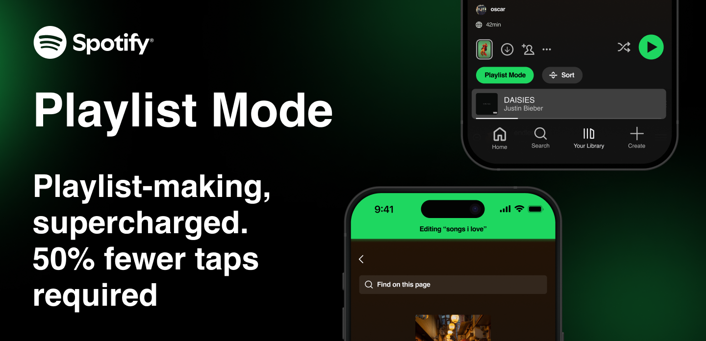

Product Designer
UX Research
Design Thinking
Wireframing
Prototyping
3 weeks
Figma
Figjam
Notion
BACKGROUND
While Spotify excels at music discovery, I have always found saving songs to playlists and making new playlists to not match that level. Simple actions, like adding a song to a playlist or checking if it's already been saved, often takes too many taps and is a pretty tedious process. What should feel instant instead feels buried.
This inspired me to go out to redesign the playlist-building experience to make it faster, more intuitive, and more rewarding, without compromising Spotify's visually appealing user interface. By streamlining key interactions and surfacing helpful visual cues, this case study explores how thoughtful design tweaks can reduce friction and give users more control over how they organize what they love.
PROBLEM
Adding a single song to a playlist on Spotify's mobile app requires navigating multiple layers, opening the three-dot menu, selecting "Add to Playlist," scrolling through multiple playlists, and then finally adding the song. What should be a very quick interaction turned into a 4–5 tap process. Below shows that process of adding a song to a playlist.
While Spotify does offer a 'Quick Add' overlay when adding songs based off suggestions, recently played, etc. This feature is still very limited in scope, as the user is restricted purely to the overlay and can often find themselves having a hard time thinking of what songs to add. This limits the user's freedom in navigating the full interface of Spotify to freely find songs without these restrictions.
These issues quickly stack up, slowing down music curation and making playlist-building feel more like a chore than a natural part of the listening experience in Spotify. This gave me a very clear understanding of the goal of this case study, making the playlist-building experience more seamless and intuitive.
RESEARCH
Before diving into designing the new feature, I wanted to first look at discussion boards from Google that mentioned if users were also experiencing any key issues with Spotify's UI. I was curious to find if others were also experiencing the same problems with me when building playlists or if Spotify had already issued this issue. These discussion posts and quotes were found from exploring Reddit.
RESEARCH
I was then curious about how other music platforms curated the playlist-building experience for their users, leading to my competitor analysis. This analysis involved diving into comparing the amount of taps it took to add a song to a playlist and determining if the process was faster in other platforms compared to Spotify. These main competitors that I took account of were Apple Music, Youtube Music, and Soundcloud.
RESEARCH
After conducting desk research and competitor analysis, I wanted to direct my attention to fellow Spotify users that I personally knew, building a stronger conviction of this occurring user experience issue. This was key to solidifying what needed to be addressed in the design of this new feature. Here are the key problems that I took note of in my discussions with other Spotify users:
SYNTHESIS
I wanted to create a user persona to embody the ideal Spotify user based on the full research process I conducted, incorporating insights from the problem discovery, user discussions, competitor analysis, and major pain points. By synthesizing the gathered data, my aim is to represent the user's preferences, pain points, and behaviors, allowing for a more focused and effective feature for the ideal user.
SYNTHESIS
The user journey map embodies, Aubrey, representing the ideal Spotify user, and how he would navigate his current situation of building a playlist. This demonstrates to show his current pain points with the process and how it directly impacts his emotions. This is a great way to better understand the user's needs and focus more on a targeted design of this feature to optimize user engagement with playlist curation.
IDEATION
After understanding the user's needs and pain points, I mapped out the current Spotify flow and designed an enhanced user flow that would address the identified problems.
This 4-5 step process creates significant obstacles: users must navigate nested menus, switch contexts from music discovery, and face decision fatigue with branching paths. This validates the pain points identified in research - users lose their "groove" when menu diving interrupts their listening flow.
This streamlined 3-step process addresses core issues through strategic simplification: "Playlist Mode" preserves context while enabling quick additions to a certain playlist, the green add button provides clear affordance, and reduced decision points eliminate complexity while maintaining functionality.
IDEATION
I then explored different approaches to indicate when "Playlist Mode" is active and simplifying the user interface of a playlist, testing various visual cues and interaction patterns to find the optimal balance between functionality and usability.
I tested three different visual approaches to indicate when users are in playlist editing mode. The first iteration used inner green shadows around screen edges, but this proved too distracting. The second approach with a more subtle green shadow near the top of the screen was less intrusive but lacked playlist context. The final iteration with a prominent green banner at the top clearly communicates which playlist is being edited while respecting Spotify's user interface.
Taking note of how compact the action bar was now with the new "Playlist Mode" button added, I focused on combining the functionality of certain buttons into the "Playlist Mode" button. The first iteration added a quick manual sorting of music within a playlist to give the feature more than just a quick add functionality. The second approach eliminated the "Edit" button by integrating its function into "Playlist Mode" as the user can freely edit the playlist cover, name, and description of the playlist when "Playlist Mode" is on. I decided to get rid of the "Add" button in the final iteration as the user has the ability to now add songs outside of the playlist interface without the constriction of an overlay. Additionally, if they were still looking for suggested songs, that would still exist near the bottom of the playlist. With that, I was able to simplify the action bar by adding the functionality of other buttons into the new "Playlist Mode" button.
FINAL DESIGNS
Transform music discovery into organized collections with just two taps. Tap the green "+" button to instantly add music to your new playlist. This streamlined approach eliminates menu navigation, keeping you in your musical flow while building meaningful playlists effortlessly.
Seamlessly add discoveries to your existing playlists with unprecedented speed. The enhanced interface prioritizes the playlists you want to edit. This smart categorization eliminates scrolling tirelessly through multiple playlists to find a certain playlist, speeding up the process of finding the home for your new favorite track.
Take control of your music organization with powerful bulk editing capabilities. Turn on "Playlist Mode" for multiple playlists and add to them simultaneously without worrying about finding the playlists you want to add a song to. Clear visual feedback ensures you always know what's within your playlists, saving significant time.
The new interface adapts to prioritize your desired edits all in one place while maintaining full access to music discovery. The newly streamlined action bar consolidates all editing functions into intuitive, context-aware controls.
Transform music discovery into organized collections with just two taps. Tap the green "+" button to instantly create a new playlist with intelligent name suggestions based on the song's mood or genre. This streamlined approach eliminates menu navigation, keeping you in your musical flow while building meaningful playlists effortlessly.
Seamlessly add discoveries to your curated playlists with unprecedented speed. The enhanced interface prioritizes your most-used playlists and groups them by mood, activity, or recent usage. Smart categorization eliminates endless scrolling, making it intuitive to find the perfect home for your new favorite track.
Take control of your music organization with powerful bulk editing capabilities. Select multiple songs and add them to multiple playlists simultaneously, or remove them with the same efficiency. Clear visual feedback ensures you always know what's happening with your collection, saving significant time for power users.
Enter a dedicated playlist editing mode that transforms your listening experience. The interface adapts to prioritize playlist building while maintaining full access to music discovery. A prominent green banner indicates which playlist you're editing, and the streamlined action bar consolidates all editing functions into intuitive, context-aware controls.
REFLECTION
Working on this Spotify case study was super fun and exciting, not just as a designer, but as someone who's been a passionate Spotify user for years. There is definitely something special about redesigning a product you use daily, where every frustration becomes an opportunity to create something better. I loved the challenge of working within Spotify's existing design system while finding creative ways to enhance the user experience.
Music has always been a huge part of my life, and seeing how technology can make that experience more seamless and enjoyable drives my passion for product design. This project allowed me to blend my love for music with my desire to solve real world problems that I and many other users face every day. The creative freedom to explore different approaches while respecting Spotify's established brand and interface was both challenging and rewarding.
What I enjoyed most was the iterative process, testing different solutions, getting feedback from fellow Spotify users, and refining the design based on real user needs. It reminded me why I love product design: the opportunity to make everyday experiences better, one interaction at a time. Whether it's reducing the taps needed to save a song or creating a more intuitive playlist-building flow, these small improvements can make a big difference in how people connect with their music.